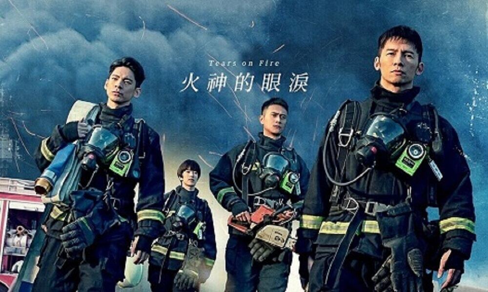
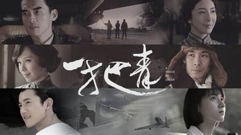
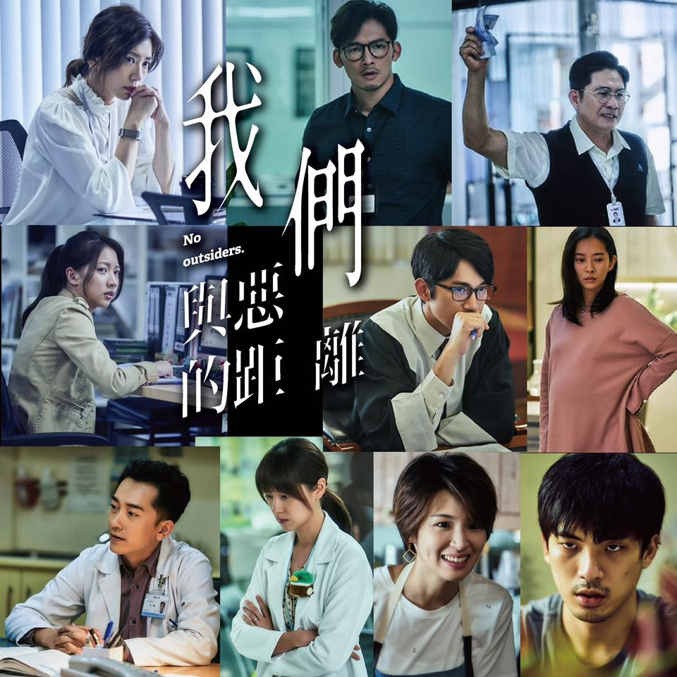

|

火神的眼淚故事著重於探討台灣消防員在執勤中面臨的生死關頭，以及在職場和家庭間的困境，並揭露消防體系中的沉痾弊端，是台灣首部消防員題材職人劇。劇名中的「火神」指的是消防員，而「眼淚」則取自「觀音垂淚」，從神明慈悲的眼光看待世間眾生。 之前看的時候時常被畫面的衝擊感震驚到，因為太真實了，也常常會隨著劇情哭出來，甚至會隔著螢幕喊「不要再進去了，好危險😭」。 |

一把青本劇描寫1945年到1981年間，從中華民國在第二次中日戰爭抗戰勝利後到第二次國共內戰再到後來中華民國政府遷臺，那個「消滅萬惡共匪、解救大陸同胞」及「漢賊不兩立」等反攻大陸口號喊得震天價響的動盪不安年代，空軍飛官及其眷屬幾段被戰火無情摧逼，生死兩隔的故事。 我當初看完，因為太入戲了，感覺內心被重重打了一拳，很不舒服，心情也會悶悶的，好一段時間才平復下來。 |

我們與惡的距離全劇以2010年代台灣的多起社會事件為題材，描述一起隨機殺人案件發生後，加害者、加害者家屬、被害人家屬、辯護律師、精神疾病患者等各方人物的心境與糾葛，是台灣第一部以隨機殺人為主題的電視劇，還涉及新聞媒體困境及思覺失調症等議題。 這部劇的劇情很沉重，看完心情久久不能平復，不同立場有不同的看法，每個人都有善與惡的一面。 |